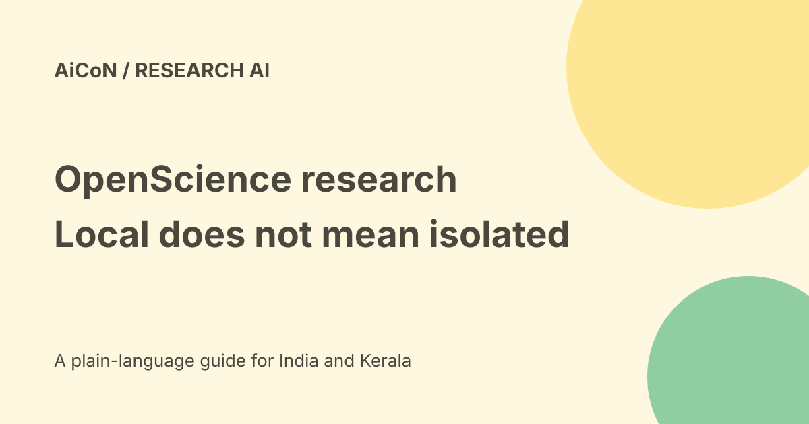

OpenScience research workbench: local files, costs and safety
OpenScience from Synthetic Sciences is an open-source research workbench. Its local software works with papers, datasets, code and results. The important current warning is that new local installs start in Full access: the permission system is not itself an isolation boundary.

Use the exact project
This guide covers openscience.sh and synthetic-sciences/openscience. Search also surfaces a different AIPOCH Open-Science project. Similar names do not make their installers, features or policies interchangeable.
The official website identifies the Synthetic Sciences repository. Use that match before following installation instructions or supplying provider credentials.
What does it do?
The project describes a research loop from literature review and hypotheses to code, experiments, analysis and write-up. Its workspace includes files, a terminal, source references and saved results.
The website advertises 42 scientific sources. The repository names databases such as UniProt, PDB, Ensembl, ChEMBL, PubChem, arXiv, OpenAlex and Semantic Scholar. Listed sources are not proof that every query works or that every returned paper is correct.
Free software is not free computation
The official project declares Apache 2.0 licensing. You can use connected providers, your own API keys or local models. The software licence does not pay provider bills, GPU rental, storage or electricity.
The README also describes optional Atlas managed models billed from a prepaid wallet. Atlas is not required. Do not confuse the free local application with free access to all hosted models.
Where does information go?
The website says local projects, settings, credentials and results stay on the device, and provider requests go directly to the services you choose.
The current README adds optional Atlas credential sync, managed models, research graphs and cloud publishing after login. Local-first does not mean that every feature or connected model runs offline. Scientific database queries also need network access.
Read the permission warning first
The current README says new local installs start in Full access for files, commands and the internet. It describes stricter Action approval choices, with supported sandbox modes on macOS and Linux.
It explicitly says the permission system is not an isolation boundary and the sandbox is not a full jail. It recommends a container or VM for hostile code. Do not put untrusted scripts beside your valuable files and assume a friendly interface keeps them safe.
How researchers can begin carefully
- Confirm the exact project and read current installation requirements.
- Use a separate test project with harmless public data.
- Inspect Action approval before running a task.
- Choose a model and check its billing and data policy.
- Begin with a narrow literature question.
- Open the actual cited papers and verify their claims.
- Read generated code before execution.
- Check inputs, units, dependencies and random seeds.
- Repeat the calculation independently where it matters.
- Keep raw data, code and limitations with the write-up.
Installation and device limits
The README describes npm and platform-binary routes. Its Linux requirements include kernel 5.1 or newer and glibc 2.17 or newer for glibc builds, with separate musl builds.
Read the current installer for your exact operating system. No package was installed here, no API key was connected, and no experiment or containment test was run.
India and Malayalam verdict
Open-source access is not a verified guarantee of compatibility with every Indian college computer, private lab system or Malayalam research task. Check your institution's data and model rules.
For human, patient or confidential data, seek the right permissions before sending anything to a cloud model. A paper citation and a polished report do not replace ethics review or expert checking.
What changed since the original post?
Two repeated archive posts become one guide. We retain the exact project identity, separate optional Atlas from local use and add the current Full access and sandbox warnings.
Frequently asked questions
Can everything work offline?
Local models can avoid cloud model calls, but online scientific sources and hosted services still require network access.
Is every model free?
No. Provider or managed-model costs can apply.
Was a research result tested?
No. This is a source-based guide.
Sources: Official OpenScience website · Official Synthetic Sciences repository · Repository licence. Checked 7 October 2026.